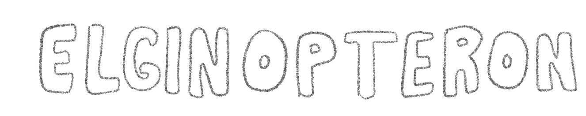
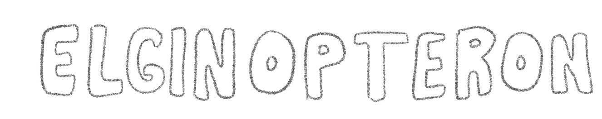

Elginerpeton was a carnivore of the Devonian period, its fossil being found in Scotland. There is only one known fossil, and it was fragmented, therefore little is know about this creature. The analysis of this partial skeleton helped to identify Obruchevichthys, which represents alongside Elginerpeton an early tetrapod group which pre-dates later tetrapods by millions of years.